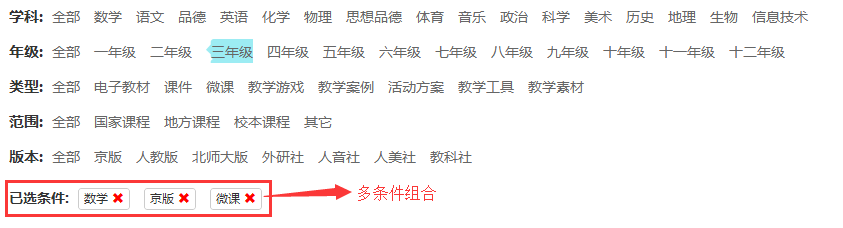
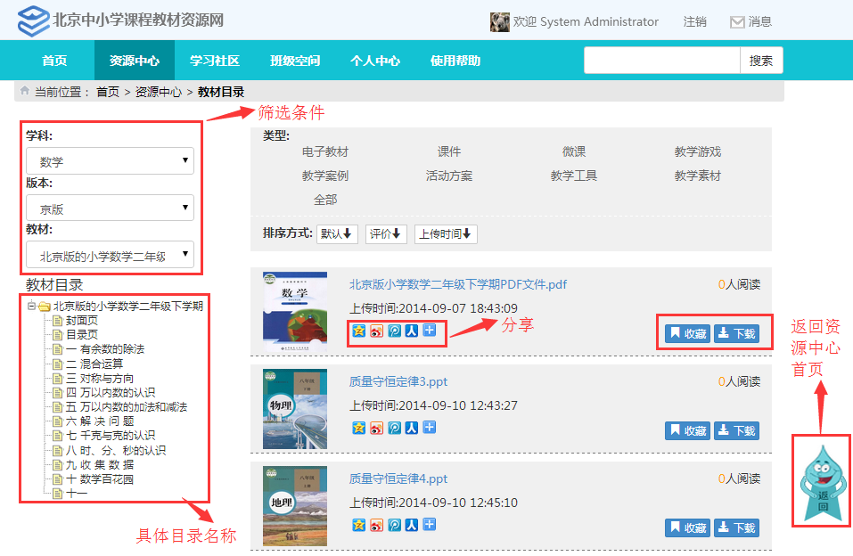
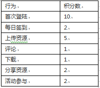
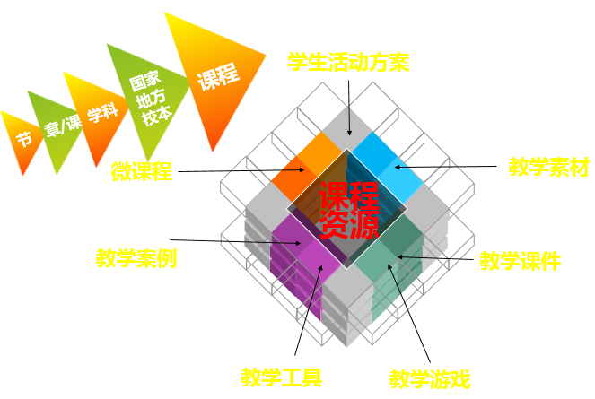
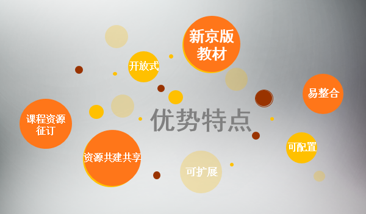

如何浏览
北京中小学课程资源网可以通过两种方式浏览资源。
1、页面上方列出的一系列浏览方式浏览。按照“学科”、“年级”、“类型”、“范围”、“版本”五种标准，如下图。可单一条件或多个组合，点击每种浏览方式，都可进入相应浏览方式页面。

2、按教材浏览，页面左侧“分类目录”列出了“科目”、“版本”、“年级”，根据需要选择相应学科、教材版本与年级后，再点击左边章节目录的具体章节。右侧“资源列表”中即可展示出相应的全部资源及其要素的描述。点击您想浏览的资源标题，即可查看资源的详细描述，并可下载。如下图

常见问题
1. 什么是电子教材？
电子教材是指以新京版教材为蓝本数字化开发的数字教材。包括转换型、媒体型、交互型三大类。
2. 北京中小学课程教材资源网站都包括哪些教材？
网站目前提供义务教育阶段新京版（2011版课标）通过教育部审查通过的电子教材，其中包括数学（1~9年级）、英语（1~9年级）化学（9年级）、物理（8~9年级）、信息技术（6~9年级）、劳动技术（3~9年级）、音乐（1~9年级）、美术（1~9年级）、地理（7~8年级）、生物（7~9年级）、体育与健康（教师用书1~6年级），以上转换型电子教材供北京市中小学教师和学生下载学习。
3. 网站从哪里可以注册账号？
目前不需要注册，教师和学生使用北京数字学校账号进行登录。
4. 在网站下载教材是否需要缴费呢？
北京中小学课程教材资源网站资源（除媒体型和交互型电子教材）对北京教师和学生都是免费下载的。
5. 如何在网站搜索教材资源？
可通过网站每个页面下的检索框进行搜索，支持关键词模糊搜索和全拼搜索。
6. 在学习社区中提问的问题都是什么人在回答呢？
北京中小学课程教材资源网所有老师及学生自愿回答的。
7. 怎么才能在网站上面找到自己的班级同学和老师吗？
通过班级空间就能找到老师及同学了。
8. 班级活动是只能同学参与吗？
不，班级活动教师和自己的班级学生都可以参与。
9. 如何建立兴趣小组？
进入学习社区，点击创建小组，即可根据需求创建自己的兴趣小组，提交审核，审核通过后可进行交流
10. 如何在网站获取到积分？
每日登录、资源共享、下载、收藏资源及参与评论都可获得积分

11. 资源下载？
当一个资源详细页有多个文件时，每个文件可单独下载，同时可对多个文件打包下载
北京教育科学研究院基础教育课程教材发展研究中心
一、 中心职能
1. 主要职能
组织基础教育课程发展研究、教材开发研究和数字课程教材建设研究，以及北京市基础教育课程方案、学科教学标准及教材编写工作；承担北京市教委委托的教材编写立项、教材初审、教材审查的日常业务性工作；配合教育行政部门组织北京市基础教育课程教材以及非教材类有关用书、课程资源、教育软件、音像制品、教学用具的评估工作；承担有关北京市基础教育教学用书的选用等教材管理工作。了全体员工的工作积极性，从而达到了企业资源的有效共享。
2. 研究方向
基础教育课程发展研究、教材开发研究和教材管理研究。近期要进行国家基础教育课程改革北京市实施方案的研制，北京市基础教育课程改革方案的修订和实施指导，国家基础教育学科课程标准北京市实施意见的研制，北京市基础教育学科课程标准和教材的修订，基础教育教材管理、审查、选用制度的研究，北京市中小学教材编写和审查规章的研制等工作。中、远期要开展“三级课程、国际课程、传统教材和数字课程资源”四大领域的建设研究工作，具体包括三级课程管理的研究，北京市地方和学校课程开发研究与指导；国际课程开发研究，如大学先修课程；传统教材的全面建设，具有首都特色的基础教育课程教材体系的研究；数字课程资源的开发研究，教科书评价研究，各类教材及教学辅助资料管理研究等工作。
二、 中心机构
1. 课程发展研究室
1) 组织并开展国内外基础教育课程方案及国家与北京市基础教育课程方案的比较研究。
2) 配合市教委制定国家基础教育课程改革北京市实施方案，规划地方课程。
3) 研制、修订并指导实施北京市基础教育课程改革方案。
4) 组织并开展北京市地方课程和校本课程的发展研究，指导区（县）和学校开发地方课程和校本课程。
5) 组织并开展课程评价体系和评价制度的发展研究，周期性地对北京市学校课程的执行情况和课程实施中的问题进行分析评估。
6) 负责各专题教育的课程建设与实施工作。
2. 教材开发研究室
1) 组织并开展基础教育学科课程标准和教材的比较研究。
2) 组织并开展国家基础教育学科课程标准北京市实施意见的研制、修订工作，并指导实施。
3) 组织并开展具有首都特色的基础教育学科课程标准和教材体系的研究。
4) 组织并指导北京市基础教育学科课程标准的研制和教材的编写工作。
5) 组织并开展基础教育课程改革实施中的教科书评价研究，对教科书选用进行指导。
6) 组织开展国际优质课程教材的研究与本土化实验工作。
3. 教材管理研究室
1) 组织并开展基础教育教材管理、审查制度的研究。
2) 在市教委指导下，修订并实施并有关北京市中小学教材编写、审查和实验的规章制度。
3) 经教育部授权，组织北京市部分国家课程教材的初审工作，及有关出版、发行的管理工作。
4) 在市教委领导下，组织北京市市、区（县）地方教材和非教材类教学用书的初审和审定工作，参加北京市中小学教学用书的编目工作，参加北京市中小学教学软件、音像制品和教学用具的评估工作。
5) 在市教委指导下，负责“北京市中小学教材审查委员会”的建设工作，研制并实施委员会的各项章程，承担委员会办公室的日常工作。
6) 承担中心日常行政管理工作。
三、 中心定位
以“加强战略研究、加强学术研究、加强前瞻性研究、培育优势研究领域、扩大全国影响力”为发展思路，深入贯彻国家和北京市教育中长期发展纲要的重要精神，建设完善的“三级课程、国际课程、传统教材、数字课程资源”四大领域，突出“业务领域丰富性、业务研究前沿性、业务交流密集性、业务结构协调性、人才队伍高素质”五个突出特征，逐步发展成为结构优化、职能完备的首都基础教育“课程教材”中心。
四、 中心业务
1. 中小学毒品预防专题实验推进研究项目
2. IB课程的引进和实验推进研究
3. 国际课程开发研究与实验推进项目
4. 首都特色北京市地方课程开发与管理模式实验研究项目
5. 北京基础教育数字化课程资源开发机制与实验研究
6. 北京市中小学义务教育课程建设项目
7. 北京市义务教育及高中阶段课程建设先进单位和优秀成果评选及推广项目
8. 中华传统文化课程教材建设项目
9. 北京市中小学地方教材审定项目（行政许可项目）
10. 首都基础教育现代化进程中学生学习方式系统变革实验研究项目
11. 北京中小学“中国梦”教材开发与教学研究项目
12. 三级课程促首都义教课改纵深发展的实验与推广项目
13. 遨游计划
14. 基础教育课改干部培训及年度课改总结项目
15. 北京市中小学专题教育项目
16. 北京市中小学精品化地方、校本教材建设工程
17. 高中学生职业指导课程开发应用与推广项目
18. 首都特色普通高中课改实施与自主课程实验项目
19. 首都特色课程教材资源体系建设项目
资源网介绍
北京中小学课程教材资源网旨在开发和建设一个以提供网络化教学资源服务为主体、以教学资源应用为重点、以促进教学资源可持续发展为方向的、充分实现资源共享的新型首都特色资源网站，由“人”的交流与互动而生成的“智慧型”资源开发，以改变学生学习方式、培养学生高级思维和问题解决能力、促进教师专业成长等。

资源共享平台的提供和建设要让师生都忙起来，围绕京版教材将付诸资源利用所有的力量共同织出符合各自学校实际教学的教育资源。教师、学生可以有效使用网络和区域的京版电子教材及信息化教学资源。在课程教材资源网中，教师、学生不仅可以下载、共享优质资源，同时可以自己创作资源，并且对资源进行评价，从而使资源可以被更多教师合理利用，进而推进教师个性化资源的建设及区域资源的建设。课程教材资源网，将提供各种工具，方便使用者查找、下载、设计开发、上传、共享与评价各种教育资源，提高教学资源的利用率，促使教学资源更好地为实际教学系统服务。
